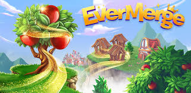
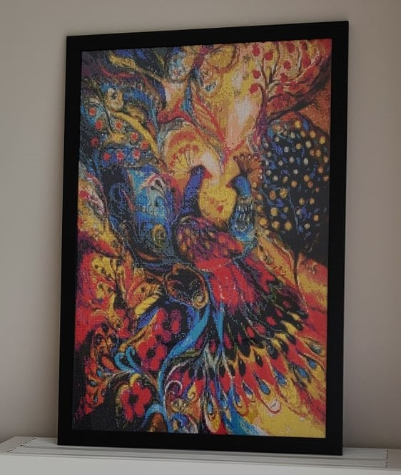
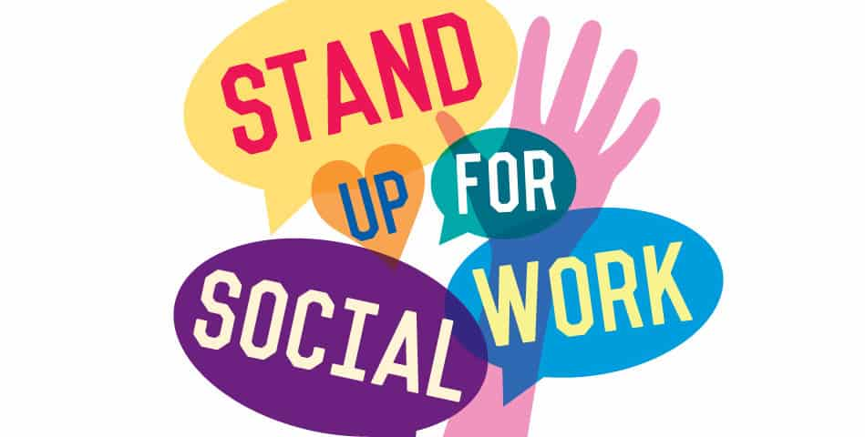
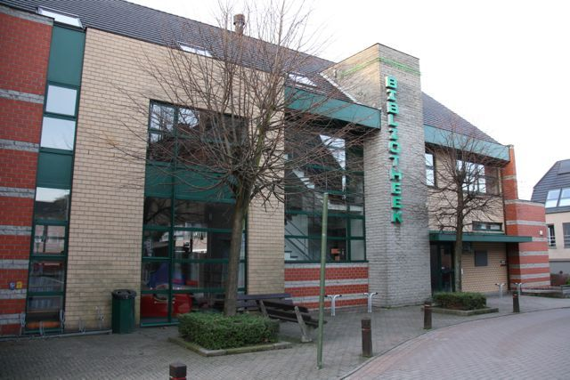

Van jongs af aan hou ik ervan om te zingen. Vroeger ging ik regelmatig naar karaokebars en deed ik af en toe mee aan een wedstrijd. Nu beperk ik mij tot het zingen met mijn karaoke app 'Smule'.
Tijdens mijn vrije tijd speel ik ook regelmatig spelletjes. Niet alleen bordspellen of spelletjes op smartphone maar af en toe ook op PS4, Nintendo Wii of Nintendo Switch.
Een laatste vrijetijdsbesteding is het maken van Diamond Paintings. Terwijl ik aan het 'painten' ben luister ik naar leuke en interessante podcasts.
Verder heb ik mij ook lokaal geëngageerd en zit ik in het bestuur van het comité sociale werken en de bibliotheek.
 